Introdução a Redes Neurais
Aprenda os principais conceitos por trás das Redes Neurais, um dos pilares do Deep Learning.
English version here.
Introdução
A Inteligência Artificial vem revolucionando a indústria nos últimos anos e resolvendo problemas, que antes eram onerosos em tempo e dinheiro, de maneira muito mais eficaz. Problemas de visão computacional, processamento de linguagem natural e diversas outras aplicações só são possíveis graças aos avanços em Aprendizagem Profunda.
As Redes Neurais Artificiais (RNA) são um dos principais pilares dessa tecnologia. Inspiradas no cérebro humano, as RNA levam esse nome pois tem conexões e motivações biológicas. Assim como no cérebro humano, onde unidade mais básica de processamento é o neurônio, as RNA possuem um elemento que processa impulsos, ou entradas, e que também é chamado de neurônio ou nó.
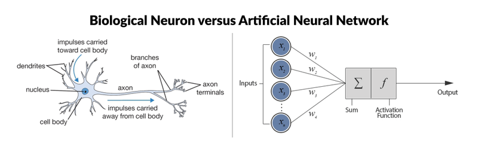
Neurônio Biológico vs Neurônio Artificial. Fonte: Keras Tutorial: Deep Learning in Python
Ambas estruturas compartilham o mesmo funcionamento para a transferência de informações: recebem uma entrada (impulso) que é carregada através do nó (corpo da célula) e ativam um certa saída (terminais axônicos). De mesma forma como nos neurônios biológicos, esse impulso nervoso que ativa o neurônios é reproduzida nas RNA através de funções de ativação.
Logo, esse elemento básico das redes neurais podem ser representado pela seguinte figura, retirada do curso Neural Networks and Deep Learning:
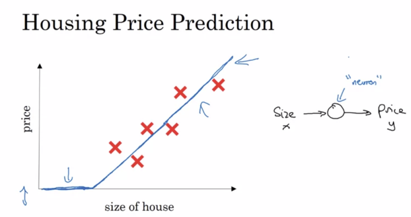
Onde, através do exemplo da necessidade de prever o preço de casas baseado no seu tamanho, podemos traçar um função que consiga representar esse problema. Nesse exemplo, uma função ReLU encaixa perfeitamente nos dados. Então, a mínima representação de um neurônio seria colocarmos na entrada a área de uma casa e, baseado na função matemática colocada “dentro” do neurônio, podemos estimar um preço para essa residência.
Dessa forma, treinamos cada neurônio para ser ativado quando um certo padrão aparece. Assim, o agrupamento de diversos neurônios em série e em paralelo, permite as Redes Neurais a aprender a reconhecer padrões em imagens, textos, áudios e nas mais diversas formas de dados.
Nesse artigo, será aprensentado os principais componentes das Redes Neurais Artificiais, algumas das principais arquiteturas, as funções de ativações mais comuns.
Redes Neurais Artificias
Apesar das Redes Neurais terem algumas semelhanças com os neurônios do cérebro humano, essas são infinitamente mais simples do que seu correspondente biológico. Essas arquiteturas são compostas por blocos matemáticos que podem ser explicados utilizando álgebra e cálculo, muito diferentemente das diversas partes do cérebro que ainda não conseguimos entender.
Os principais componentes das RNA são: a camada de entrada, as camadas ocultas e as camadas de saída. Essas camadas são ligadas através de conexões que têm pesos, esses definem o quão importante aquela conexão é para a rede. Além disso, como vimos anteriormente, na saída de cada neurônio existe um função de ativação que definirá se o neurônio irá ativar ou não.
Blocos de uma Rede Neural Artificial
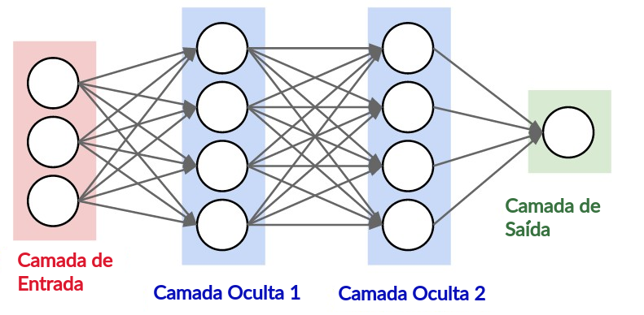
Arquitetura de uma Rede Neural Genérica de 3 Camadas. Fonte: Stanford CS231n
Camada de Entrada
Um bloco de neurônios pode ser chamado de camada. Mas perceba que apesar de os neurônios se interligarem entre camadas, eles não tem conexões dentro da mesma camada. Como mostra a figura acima, a primeira camada de uma Rede Neural é a camada de entrada. Esta tem apenas a função de passar as entradas do sistema para a próxima camada e não realiza nenhuma função matemática.
Camadas Ocultas
Essa camada é responsável por uma das principais funções das redes neurais: processar os dados e enviá-los para a camada seguinte. O valor de cada neurônio é encontrado multiplicando o pesos W pela entrada X e somando um viés b. Esse valor então passa por uma função de ativação e é enviada a próxima camada, como mostra a Fig. 2.
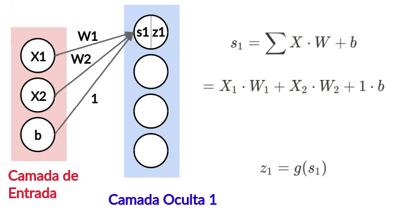
Operações Matemáticas dentro do Neurônio. Fonte: Fonte: Stanford CS231n Modificada.
Assim, se isolarmos o primeiro neurônio da primeira camada oculta, o valor de saída do neurônio será igual a z1. Onde s1 é a entrada do neurônio, onde multiplicamos os pesos pelas entradas e somamos um viés b. Após essa operação, é aplicada então uma função de transferência g sobre o s1.
É importante notar que X e W na primeira equação são matrizes nesse caso, e representam todas as entradas e todos os pesos, respectivamente.
Chamamos essa camada de “Camada Oculta” pois durante o treinamento de redes neurais temos as entradas que são conhecidas e as saídas que são esperadas. Mas não vemos quais os valores dentro dos neurônios dessa camada. Esse bloco pode conter diversas camadas ocultas, e quanto mais camadas mais “profunda” é a rede neural, e mais padrões ela consegue aprender.
Camadas de Saída
A camada de saída é a responsável por mostrar os resultados obtidos através dos cálculos feitos nas camadas ocultas. Normalmente é utilizada uma função de ativação, assim como a dos neurônios das camadas anteriores, para simplificar o resultado.
Pesos e Viés
Os pesos são responsáveis por definir o quão importante aquela conexão é para a rede neural. Como existem diversas conexões dentro das RNA, é dessa forma que essa arquitetura entende quais padrões ela deve aprender e quais ela deve ignorar. Além disso, comumente é utilizado um valor chamado de viés junto aos pesos e as entradas. Esse valor ajuda a fazer um ajuste fino na rede neural. Dessa forma, se tivermos um neurônio i em uma camada e um neurônio j na camada seguinte, teremos um ligação com o peso Wij e um viés bij.
Funções de Ativação
Também chamada de função de transferência, é o último processamento matemático que acontece antes da informação sair do neurônio. Esta equação matemática define se o neurônio será ativado ou não, podendo ser pode ser uma função degrau, uma função linear ou uma função não linear.
A função de ativação mais simples seria a utilização de um degrau unitário. Onde o neurônio iria ativar somente caso a entrada fosse superior a um threshold, e o sinal de entrada seria totalmente reproduzido na saída do nó.
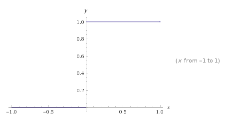
Esta pode retornar valores de 0 e 1, utilizado em problemas de classificação, ou entre 0 e 1, utilizado em problemas que estamos mais interessados em saber a probabilidade de certa entrada fazer parte de certa classe.
Principais Tipos de Redes Neurais Artificiais
Existem dois tipos principais de Redes Neurais: Redes Neurais Feedforward e Redes Neurais Recorrentes.
Redes Neurais Feedforward (RNF)
Essa arquitetura é a mais comumente encontrada na literatura. Nela, a informação move-se em apenas uma direção: da entrada, passando pela camada oculta até o nós de saída, e não existem ciclos.
A unidade mais simples dessa topologia é o Perceptron, a rede neural mais simples que é composta apenas por um nó.
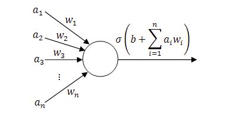
O Perceptron
Alguns problemas simples podem ser resolvidos com o Perceptron, pois ele só funciona com funções linearmente separáveis.
Com a necessidade de resolver problemas mais complexos e a partir dessa unidade básica, surge o Perceptron Multicamadas (MLP). Composto por diversas camadas desses nós, sendo muito mais úteis e podendo aprender funções não lineares.
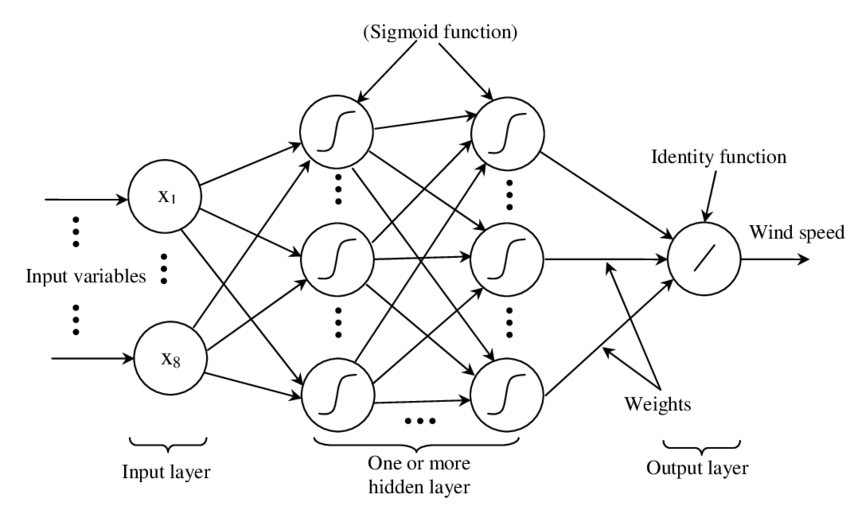
Uma arquitetura de um Perceptron Multicamadas. Fonte:Advanced Methods for the Processing and Analysis of Multidimensional Signals: Application to Wind Speed
E por fim, temos as Redes Neurais Convolucionais (CNN), que são o exemplo mais comum das Redes Neurais Feedforward. Inspiradas no Córtex Visual, essa topologia divide os dados em pequenos pedaços e tentar aprender padrões essenciais. Essa operação é chamada de Convolução. Mais eficientes que os MLP, essa topologia é encontrada vastamente em aplicações de visão computacional, vídeo e linguagem natural. Essa topologia possui seus blocos característicos próprios, como as camadas de convolução e de pooling.
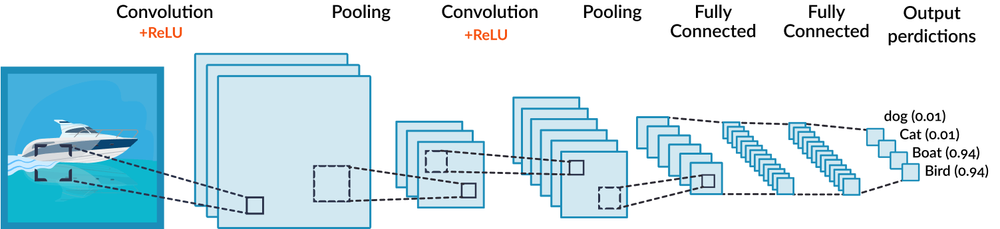
Exemplo de Rede Neural Convolucional. Fonte: Convolutional Neural Network Tutorial
Redes Neurais Recorrentes (RNN)
Diferente das Redes Neurais Feedforward, nas RNN a informação flui não somente para frente, mas para trás também, formando um ciclo. Para isso, assim como as CNN, elas usam diversos blocos próprios, como um bloco de memória por exemplo. Isso permite essa topologia capturar padrões dinâmicos temporais e serem vastamente utilizados em problemas de reconhecimento de voz e problemas que exigem uma ligação sequencial.
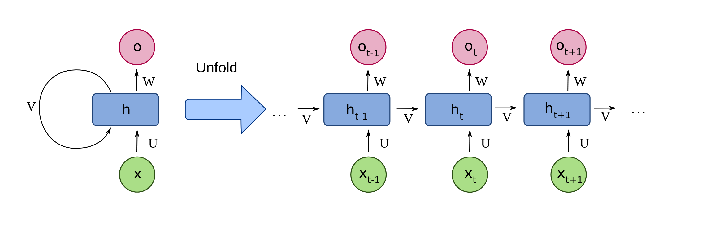
Exemplo de Rede Neural Recorrente Fonte: wikimedia
Tipos de Funções de Ativação
Além da função degrau unitário, que acredito não ser usada na prática, existem diversas outras funções de ativação. Além de determinarem a saída de um modelo, elas também ajudam na precisão dos resultados e na eficiência com que o modelo será treinado. Na prática, os modelos modernos usam funções de ativação não-linear, que são capazes de capturar padrões em dados mais complexos.
As funções de ativação são usadas em dois momentos nas Redes Neurais: para processar a saída de um único neurônio, como vimos durante o tópico de camadas ocultas, e para processar a saída da rede neural como um todo.
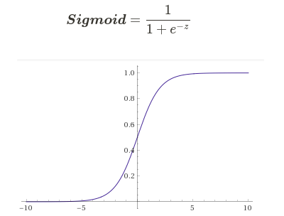
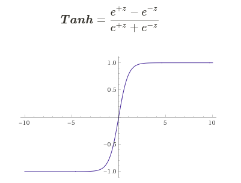
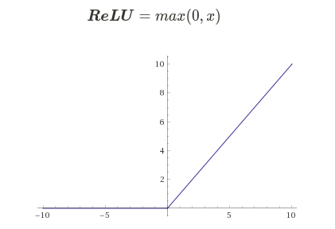
Normalmente são usadas funções Rectified Linear Unit (ReLU) na prática. A função Sigmoid é normalmente utilizada para demostrar como esses elementos funcionam e normalmente é substituida pela Tangente Hiperbólica (TanH). Exceto no caso do problema tratar-se de uma classificação binária, nesse caso seria melhor uma função Sigmoid na saída do modelo pois está já entregaria o resultado entre 0 e 1.
A escolha da função de ativação é motivada pelas características do problema que está sendo resolvido. A Sigmoid, por exemplo, apesar ter um gradient mais suave e normalizar a saída entre 0 e 1, tem problemas com vanish gradients e sua saída não está centrada em zero. Já TanH tem o seu centro em zero, o que facilita o aprendizado das camadas seguintes, mas desvantagens parecidas com a Sigmoid.
Além dessas, ainda podemos destacar:
- Leaky ReLU
- Softmax
Conclusão
Nesse artigo passamos por alguns dos principais conceitos de Redes Neurais Artificiais. Após essa revisão, espero que você já tenha uma idea mais concreta dos conceitos básicos que envolvem um dos principais tópicos de Aprendizagem Profunda. Entendendo os principais blocos construtores das RNA, as principais topologias e as funções de ativação mais comuns, podemos agora passar a tópicos mais avançados como Forward and Backward Propagation e o Gradient Descent.
Subscribe to Edge AI Guru
Get the latest posts delivered right to your inbox

{kind=link}